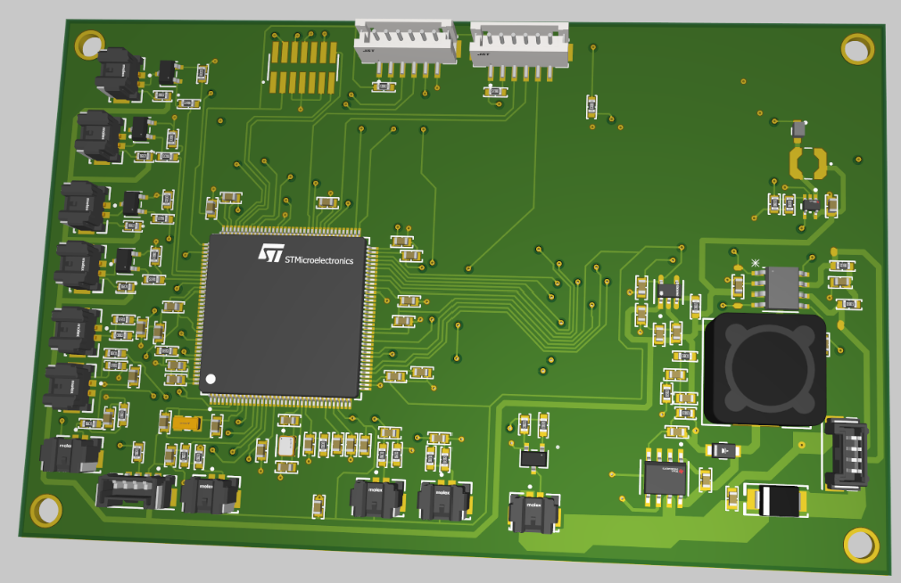

Projects
Take a look at some of the things I've made and am proud of. Primarily software and electrical projects, both personal and done in group settings. Enjoy :)
Motorsports Dashboard
My freshmen year project as a member of MIT Motorsports: Designing for the dashboard electronics and driver display. Incharge of also firmware for the board.
OpenNoteAI: ChatGPT + Notes

This was a personal project I did over the summer after learning about ChatGPT. I wanted to integrate the model with my personal notes, which led to me create my own website wrapper that fed in notes using the function call api, enabling GPT to query for related notes. These notes were sourced from a PineconeDB, which are uploaded as embeddings alongside text metadata using the binary applicaiton built in Rust.
Customies/CustomX
My first major project, where I implemented custom blocks and items in minecraft bedrock edition. Currently is widely used in the bedrock community, with 100+ github stars. I had initially developed my very own version (CustomX), before partnering up with the only other similar type of project which we later open sourced.
CylexSky
This was a summer long project that I worked on. Cylex was meant to be a minecraft server that would use the custom block and item features me and a couple friends created / popularized on a commerical server. It is around 30k lines of code (if that means anything to you), and follows generally good OOP practices.